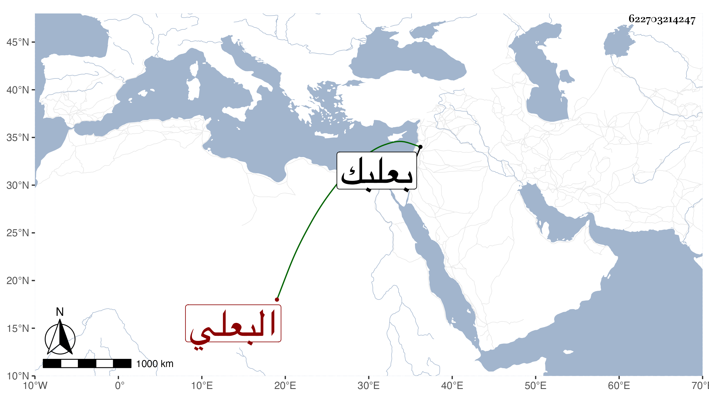

0902Sakhawi.DawLamic.ITO20230111-ara1.EIS1600.622703214247
Biography ID: 622703214247
490
محمد بن علي بن عبد الرحيم بن عبد الولي البدر البعلي ويعرف بابن الجنثاني بكسر الجيم ثم نون ساكنة بعدها مثلثة مفتوحة وبعد الألف نون . ولد في منتصف ذي القعدة سنة سبع وخمسين وسبعمائة ببعلبك وقرأ القرآن عند الشمس محمد بن عيسي وسمع على الصلاح بن أبي عمر منتقي البرزالي من مشيخة الفخر وعلي أحمد بن عبد الكريم البعلي صحيح مسلم وعلي يوسف بن عبد الله بن الحبال السيرة لابن إسحق وكان يذكر أنه سمع على ابن أميلة سنن أبي داود وغيرها بجامع المزة وعلى العماد بن بردس والقاضي التاج بن المجد الكبير وأثبت له ذلك فقيهه ابن عيسى ولكنه ذهب في الفتنة وليس ببعيد عن الصدق وقد حدث سمع منه الفضلاء ومات قريب الاربعين رحمه الله .
